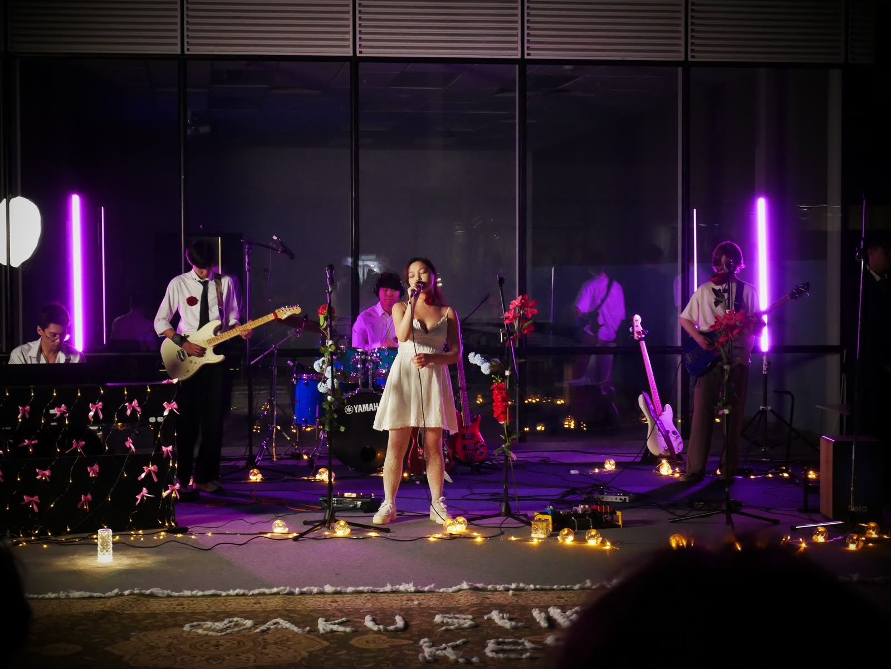

Joining Our Campus Ensembles
At the beginning of each academic semester, the Astana IT University Music Club hosts auditions for newly enrolled and returning students. We are looking for passionate vocalists, guitarists, bassists, drummers, keyboard players, and brass instrument performers. Tryouts take place in our main rehearsal space in Room C1.1.142 between 15:00 and 20:00.
Our audition committee evaluates rhythm stability, pitch control, and willingness to collaborate within team ensembles. Candidates are asked to prepare two short musical fragments: one primary solo piece and one impromptu rhythm test. Remember that stage confidence matters more than flawless speed. Current recruitment is active for all performance tracks.
Applicants should bring their student ID and arrive early enough to prepare before the audition.
